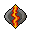

Lumbridge/Draynor
The Lumbridge/Draynor Achievement Diary is available to all players, both free and Members.
Beginner Tasks
Task |
Quests Started / Required |
Skill / Other Requirements |
|
Climb to the highest point in Lumbridge |
None | None | |
Raise the flag on the roof of the Lumbridge Bank |
None | None | |
Speak to the Duke of Lumbridge |
None | None | |
Speak with the Doomsayer about the Warning System |
None | None | |
Find out about the Stronghold of Security from the Lumbridge Sage |
None | None | |
Browse the Lumbridge General Store |
None | None | |
Visit Fred the Farmer's chicken and sheep farm |
None | None | |
Mine some clay in the Mining patch north of the Champions' Guild |
None | None | |
Make some soft clay in Draynor Village potter's house |
None | None | |
Make a pot on the potter's wheel in Draynor Village potter's house |
None | None | |
Fire a pot in the kiln in Draynor Village potter's house |
None | None | |
Enter the courtyard of the spooky mansion in Draynor Village |
None | None | |
Grind some flour in the windmill north of Lumbridge |
None | None | |
Visit the Draynor Village market |
None | None | |
Find out about the Rules of RuneScape from the Draynor Town Crier |
None | None | |
Climb to the top of the Wizards' Tower |
None | None | |
Mine some copper in the Mining spot to the south-east of Lumbridge Swamp |
None | None | |
Catch some shrimp in the Fishing spot to the east of Lumbridge Swamp |
None | None | |
Sell a shrimp in the Lumbridge fishing store |
None | None | |
Look through Father Aereck's selection of gravestones |
The Restless Ghost | None | |
Play the organ in the Lumbridge Church |
None | None | |
Ring the bell in the Lumbridge Church |
None | None | |
Pass through the Al Kharid gate |
None | None |
Click the box below to see the rewards for completing the beginner tasks:
Warning: Spoilers Below To view the spoiler, highlight the box below with your cursor to see the text hidden insideShow spoiler...
| Explorer ring | When worn: Replenish 50% of your run energy once per day Experience lamp - 500 experience in the skill of your choice |
| Permanent reward | 'Explore' emote |
Easy Tasks
Task |
Quests Started / Required |
Skill / Other Requirements |
|
Obtain a cow-hide from a cow in the field north-east of Lumbridge |
None | None | |
Have Ellis tan your cow-hide to make soft leather at his shop in Al Kharid |
None | None | |
Craft a pair of soft leather gloves |
None | None | |
Mine some iron ore from the Al Kharid Mining spot |
None | 15 |
|
Catch a pike in the river to the east of Lumbridge Castle |
None | 25 |
|
Smelt a steel bar in the Lumbridge furnace |
None | 30 |
|
Search the shed in Lumbridge Swamp |
None | None | |
Kill a giant rat in Lumbridge Swamp |
None | None | |
Cut down a dead tree in Lumbridge Swamp |
None | None | |
Light a campfire from normal logs in Lumbridge Swamp |
None | None | |
Cook some rat meat on a campfire in Lumbridge Swamp |
None | None | |
Craft a water rune at the Water Altar |
Rune Mysteries | 5  | |
Get a replacement Ghostspeak Amulet from Father Urhney |
The Restless Ghost | None | |
Taunt the demon at the top of the Wizards' Tower |
None | None | |
Have Sedridor teleport you to the Essence Mine |
Rune Mysteries | None | |
Access the bank in Draynor Village |
None | None | |
Have the Wise Old Man check your bank for unnecessary quest-related items |
None | None | |
Discover what the Wise Old Man is watching through his telescope |
None | None | |
Defeat a zombie in the sewers under the jail |
None | None |
Click the box below to see the rewards for completing the easy tasks:
Warning: Spoilers Below To view the spoiler, highlight the box below with your cursor to see the text hidden insideShow spoiler...
| Upgraded explorer ring | In addition to the beginner tasks' reward, when worn: 30 free Low Alchemy castings per day (requires Magic level 21) Replenish 50% of your run energy twice per day 10% chance of crafting an extra air, earth, fire or water rune for each essence you use. Experience lamp - 1,000 experience in the skill of your choice |
Medium Tasks
Task |
Quests Started / Required |
Skill / Other Requirements |
|
Smith a steel longsword on the anvil in the jail sewers |
None | 36 |
|
Use the Teleport to Lumbridge spell (Not the Home Teleport spell) |
None | 31 |
|
Mine some coal in the Mining spot to the south-west of Lumbridge Swamp |
None | 30 |
|
Cut down a willow tree to the east of Lumbridge Castle |
None | 30 | |
Light a willow log fire on top of the Lumbridge Castle gatehouse |
None | 30 |
|
Cook a lobster on the range in the Lumbridge Castle kitchen |
Cook's Assistant | 40 |
|
Obtain an anti-dragonbreath shield from Duke Horacio |
Dragon Slayer | None | |
Mine some silver from the Mining patch north of Al Kharid |
None | 20 |
|
Catch a salmon in the river to the east of Lumbridge Castle |
None | 30 |
|
Smelt a silver bar in the Lumbridge furnace |
None | 20 |
|
Craft a holy symbol in the Lumbridge furnace |
None | 16 |
|
Get Beefy Bill to bank something for you |
None | None |
Click the box below to see the rewards for completing the medium tasks:
Warning: Spoilers Below To view the spoiler, highlight the box below with your cursor to see the text hidden insideShow spoiler...
| Upgraded explorer ring | In addition to the beginner and easy tasks' reward, when worn: Replenish 50% of your run energy three times per day Cabbage-port - free teleport to the cabbage patch near Port Sarim Experience lamp - 1,500 experience in the skill of your choice |
For more information about Lumbridge and the surrounding areas, please see the Area Guides.

More articles in
Achievement Diary
|
|
|
Further Help
Need more help? Come chat with us!
|
|